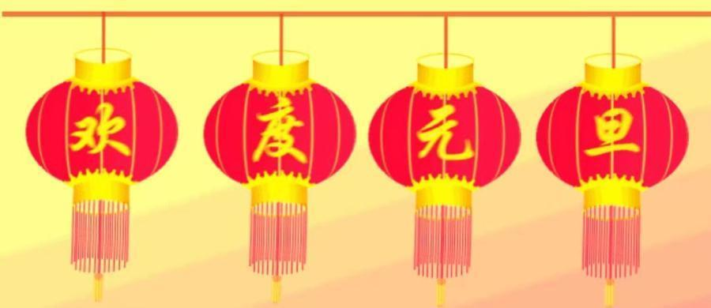
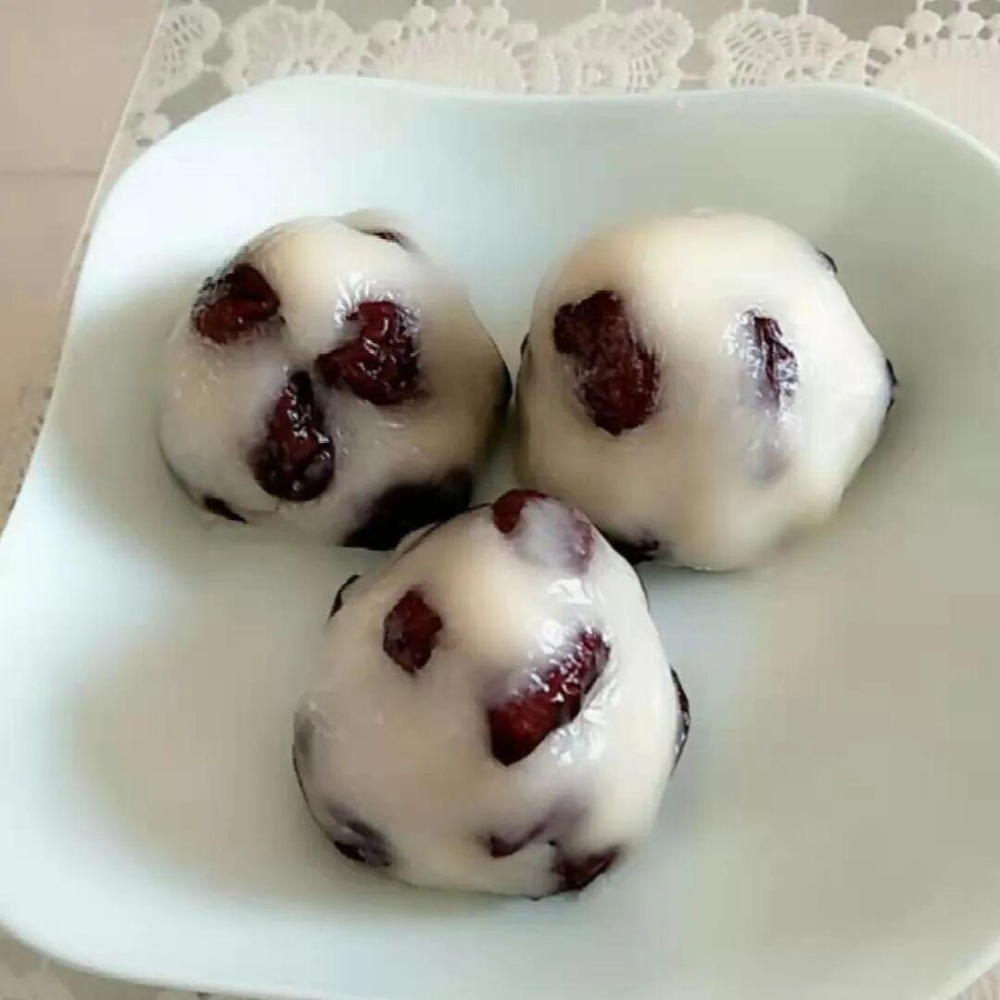
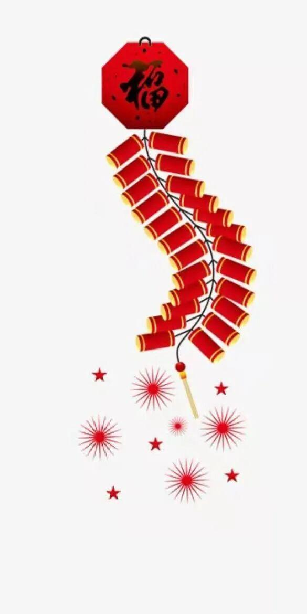

元旦快乐

最后一缕风，带走一年的忧喜；最后一场雪，清除一年的得失；最后一弯月，映照一年的悲欢。而一轮红日，为这过去的一年画上一个圆满的句号。元旦来了，小伙伴们你们准备好了吗？让我们一起来了解一下元旦吧！
中国传统的元旦是指正月初一，“元旦”的概念，在不同时代、不同国家，具体所指也不尽相同。中国的“元旦”这一概念，历来指的是正月一日。“正月”的计算方法，在汉武帝时期以前也是很不统一的。中国的“元旦”这一概念，历来指的是正月一日。“正月”的计算方法，在汉武帝时期以前也是很不统一的。
辛亥革命后，为了“行夏正，所以顺农时，从西历，所以便统计”，民国元年决定使用公历（实际使用是1912年），并规定阳历1月1日为“新年”，但并不叫“元旦”。1949年中华人民共和国以公历1月1日为元旦，因此“元旦”在中国也被称为“阳历年”、“新历年”或“公历年”。
元旦作为一个重要的节日，还有很多其他称谓，如元日、元正、元辰、元春、开年、华岁等。“元正”出自汉代崔瑗的《三子钗铭》；而在晋代，庾阐的《扬都赋》中称之为“元辰”；说起元春，除了是《红楼梦》金陵十二钗之一，如果你还能道出自北齐的《元会大享歌皇夏辞》中将“元旦”谓之“元春”这样的典故，一定会令人刮目相看，瞬间为你的文化素养加分！
吃鸡蛋：各人吃一个鸡蛋的习俗，在吴晋间的《风土记》中已出现。《风土记》说“正旦，当生吞鸡子一枚，谓之练形”。练形是道家用语，指修炼形体，认为可以成仙。生吃鸡蛋是为了长生。
五辛盘：作为元日食品最早见于吴晋间周处的《风土记》，说元日早晨吃五辛菜.“以助发五藏气”(《玉烛宝典》卷一引)。

年糕：又称粘粘糕，取年年高之意。在南方用糯米制成，年糕北方则为黏黍。年糕的历史悠久，汉朝的米糕已有“稻饼”、“糕”、“饵”、“糍”等名称。6世纪食谱《食次》就有年糕“白茧糖”的制法，北朝《齐民要术》记载了将米磨成粉制糕的方法。元旦吃年糕盛行于明清时代，尤以南方流行。

桃汤：即取桃之叶、枝、茎三者煮沸而饮，古人以桃为五行之精，能厌伏邪气。制百鬼，故饮之

一个鸡蛋去茶馆喝茶，结果它变成了茶叶蛋；
一个鸡蛋跑去松花江游泳，结果它变成了松花蛋；
一个鸡蛋跑到了山东，结果它变成了鲁（卤）蛋；
一个鸡蛋跑到花丛中去了，结果它变成了花旦；
一个鸡蛋骑着一匹马，拿着一把刀，原来它是刀马旦；
一个鸡蛋滚来滚去，越滚越圆，结果就变成了圆蛋－－大家元旦快乐哦！
新年到了，买辆奔驰送你，太贵；请你出国旅游，浪费；约你大吃一顿，伤胃；送你一枝玫瑰，误会；给你一个热吻，不对。发条消息祝你元旦快乐，实惠！
祝你在新的一年里：财源滚滚，发得像肥猪；身体棒棒，壮得像狗熊；爱情甜甜，美得像蜜蜂；财源滚滚，多得像牛毛！
因你缺钱，送给你崭新一“元”；因你演戏，送给你装扮小“旦”；因你笨拙，送给你眼勤手“快”；因你悲伤，送给你欢欢乐“乐”；因你全无，送给你我的全部：元旦快乐！
考试零分叫鸭蛋，做坏事叫坏蛋，脑袋空空叫傻蛋，炒鱿鱼叫滚蛋，鸣呼哀哉叫完蛋，蛋太完美叫“元旦”！
写不出绚丽多彩的语句，买不起奢华昂贵的礼物，做不到脉脉含情的问候，也没有激情四射的想念，只想和你说一声：朋友，想你了，愿你多多注意身体，快乐每一天！
我以涮羊肉的温暖，水煮鱼的热烈，白灼虾的鲜美，咕老肉的甜蜜，拉条子的宽广，发面饼的博大，祝福你在新的一年万事如意，心想事成，财源滚滚！
不许动！举起手，认识的站左边，不认识的站右边，想笑的站中间。说你呢，快放下手机，双手抱头靠墙站好，仔细给我听着：祝你元旦快乐！

排版|李现亮
图片|网络